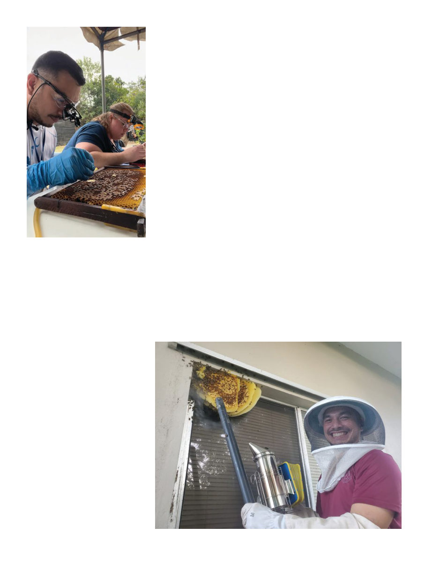

American Bee Journal
108
and covering this and flying around
it were large inch-long brown hor-
nets with a single broad yellow band
around their abdomen: the greater
banded hornet, Vespa tropica. Soon
they were being found all over the is-
land; it was already too late to prevent
them from taking hold.10
It’s believed the hornets came in
an empty cargo container on a ship
from Southeast Asia. Rosario, sens-
ing what a threat this species was,
was “extremely devastated” when he
found the hornets. Other entomolo-
gists assured him they weren’t a pest
of honey bees, but that sadly proved
untrue. These hornets’ first prefer-
ence for prey is paper wasps, and
the island’s wasp population (Polistes
olivaceus and Polistes stigma — these
wasp species were themselves intro-
duced via Japanese vessels in WWII2
— known locally as “boonie bees”)
immediately crashed. Running out
of wasps to eat, the hornets turned to
bees, and 55 managed colonies have
been lost to hornets to date (one out
of every six hives!).
Guam is so far free from foulbrood
(European or American), or small hive
beetle, though they do suffer from
chalkbrood due to the high humidity.
Guam does not have any specific
biosecurity officers. In 2003 the Plant
Protection Quarantine officers they
had had were merged into the Guam
Customs and Quarantine, “which es-
sentially gutted the Department of
Agriculture’s biosecurity program”
(as Dr. Campbell put it2). Today the
Guam Department of Agriculture,
Customs and Quarantine Agency,
and U.S. Department of Agriculture
APHIS Plant Protection Quarantine,
work together for management and
prevention of invasive species. It is
estimated that every year a hundred
invasive species arrive in Guam via
the ports, with three successfully es-
tablishing themselves.1 Coconut rhi-
noceros beetles (Oryctes rhinoceros),
little fire ants (Wasmannia auropunc-
tata), and Asian cycad scale (Aulacas-
pis yasumatsui, an insect which attacks
Guam’s native Cycas micronesica, a
ferny plant) are a few examples of
other invasive pests that have unfor-
tunately become established. The rhi-
noceros beetles have destroyed over
half the island’s coconut trees.
Chris Rosario, you will recall, had
wanted to be a veterinarian when
he found work as a technician in
the honey bee survey. “This survey
opened my eyes to research because
so little was known about honey bees
in Guam. It then made me want to
go into graduate school, where I used
this survey as my research project,”
Rosario told Entomology Today.1
In 2021 he received his master’s de-
gree in environmental science with
a focus on entomology. His boss, Dr.
Campbell, happened to be retiring,
and Rosario successfully applied for
the position, becoming the first na-
tive of Guam to be the island’s state
entomologist.
Photo 5 Christopher Rosario and apiary
inspectors from across the U.S. made
their way to Thailand for a Tropilaelaps
detection workshop conducted by Au-
burn and Chiang Mai universities, and
funded by the North Dakota Dept. of
Agriculture and Project Apis, in January
2024.
The small community of beekeep-
ers grew by about 10 a year, jumping
from 55 to 105 during COVID as in-
terest in hobbies one can do at home
peaked. Now there are 115 beekeepers
in the Guam Beekeepers Association
(https://www.guambeekeepers.org/)
managing about 250 hives, including
six beekeepers commercially selling
their honey. Rosario estimates that for
every managed hive, however, there
are 10 feral hives (which would equal
the 1.7 hives per square mile estimated
for Oceania in a recent meta-analysis
of feral colony densities9).
This push for people to call in about
bees may have helped detect another
invasive pest — in June 2016 some-
one called in a bee colony that turned
out to be something much worse.
By the shores of clear and shallow
Tumon Bay in the northern built-up
part of Guam, where the Hyatt and
Hilton overlook the beach, Rosario
was called to look inside a hollow old
avocado tree. There he found not a
bee colony but an ugly nest of several
tiers of dark paper mâché cells filled
with bright white pupal cocoons like
an arsenal of missiles ready to launch,
Photo 6 Rosario uses a bee vac to relocate bees from where they’re unwanted to
where they’re wanted.